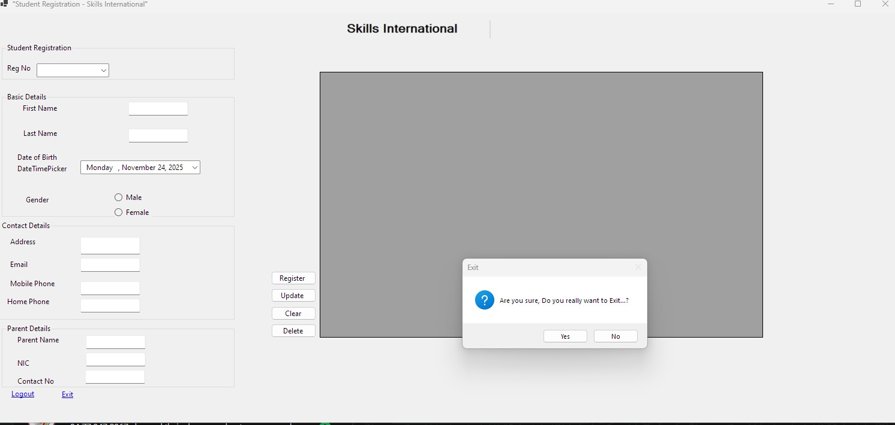
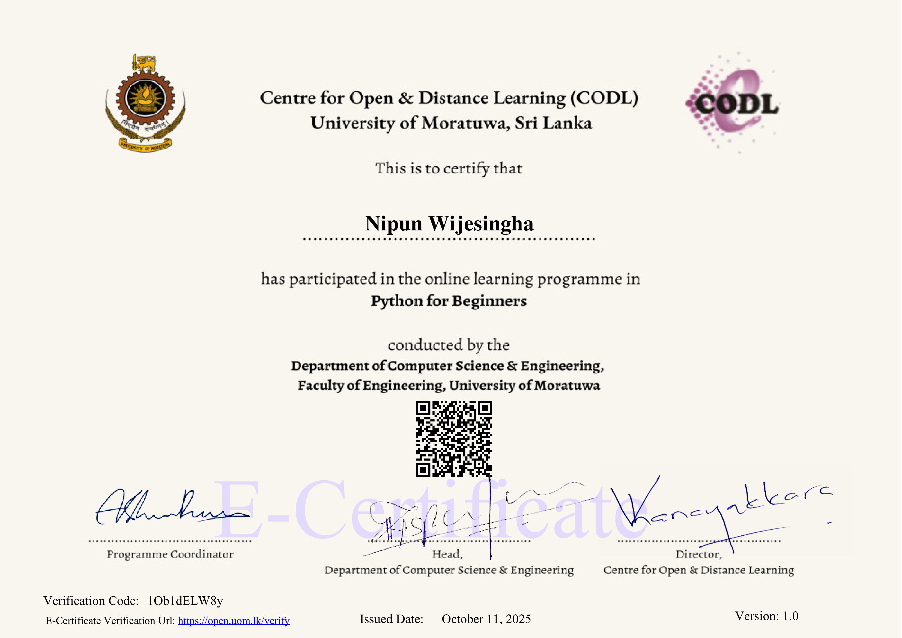

Development
- Python Programming
- HTML, CSS, JavaScript
- Git & GitHub
- Web Development Fundamentals
A dedicated IT Technician and passionate IT undergraduate, skilled in hardware, networking, Python development, and software solutions. Aspiring to become a professional Software Engineer and contribute to innovative tech projects.
Projects built
Certificates earned
Work experiences
Skill areas
I am a first-year undergraduate at the University of Colombo School of Computing (UCSC), pursuing a Bachelor's in Information Technology. My journey in tech began with a deep curiosity for how things work, which led me to complete a diploma in Computer Hardware and Networking. Today, I balance my studies with my own venture, KAMA IT Solutions, where I provide practical tech support to my community.
My goal is to transition into a software engineering role where I can contribute to building innovative and impactful applications. I am a quick learner, a collaborative team player, and I am actively seeking internship opportunities to apply my skills and grow in a professional environment.
Through KAMA IT Solutions I help people and small businesses with everyday IT problems.
Diagnosing and fixing hardware and software problems on laptops and desktops, plus component upgrades.
LAN/WAN setup, cable crimping and router configuration for homes and small offices.
Help with installing, updating and fixing software and settings on your phone.
Clean, mobile-friendly websites for individuals and small businesses.
Responsible for diagnosing and repairing laptop/desktop hardware and software issues, providing technical support to clients, and managing system maintenance.
Established and manage KAMA IT Solutions, providing comprehensive IT services including computer repair, network setup, and mobile software assistance.
Developed excellent teamwork and communication skills in a fast-paced environment while ensuring timely completion of tasks.

A desktop application built with C# and SQL Server. It features a user-friendly interface for managing student records, attendance, and grades with full CRUD operations.
View CodeUses Python, OpenCV, and MediaPipe to detect hand landmarks from a webcam feed and count the number of raised fingers in real-time.
View CodeThis website: built from scratch with HTML, CSS, and JavaScript. Fully responsive, with scroll animations and a working contact form.
View CodeCurrently pursuing a comprehensive degree in IT, focusing on software development, systems analysis, and modern IT practices.
Currently EnrolledCompleted professional training in computer hardware assembly, diagnostics, repair, and networking fundamentals.
Completed
University of Moratuwa

AION Campus

VTC Dehiwala
Have a project in mind or need IT support? Send me a message. I'm always open to discussing new opportunities.
Prefer a quick chat?
Chat on WhatsApp